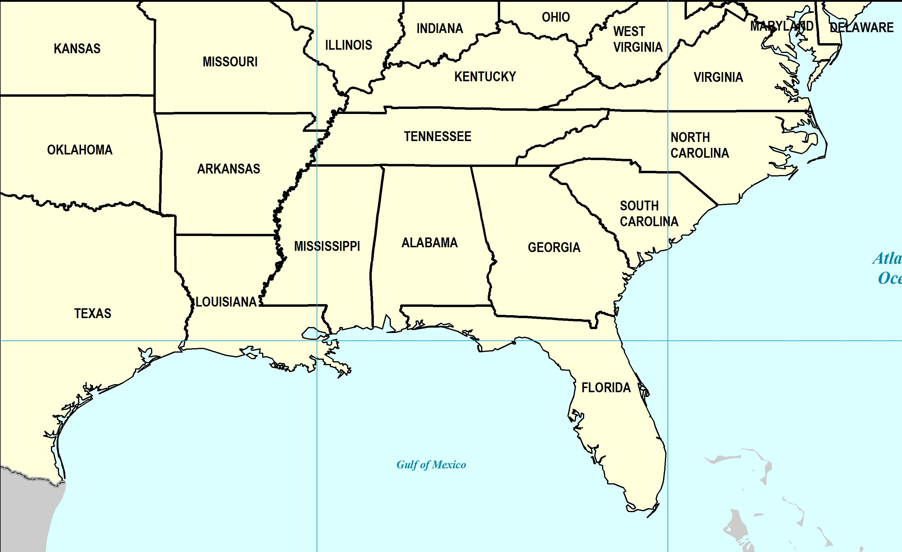

We are going on a 22 day road trip! 10 Southern Cities in 22 days! With so many things to see and so much to do, we need your help. We are seeking your suggestions for places to eat, things to see, visit, or do in each of the 10 places we are visiting. Lodging has been taken care of. Transportation is booked. So, now tell us...WHAT SHOULD WE DO?!
